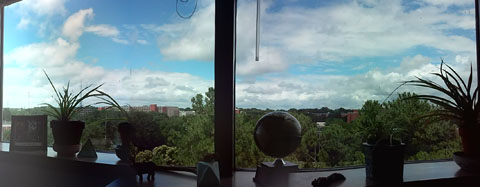

Laura Tateosian
MGIST electives: https://cnr.ncsu.edu/geospatial/education/courses/
MGIST program page: http://online.geospatial.ncsu.edu/programs/master-of-geospatial-information-science-technology/
Current PhD Committees: Chelsey Walden-Schreiner (Chair: Yu-Fai Leung), Allie McCreary (Chairs: Erin Seekamp and Jordan W. Smith), Anna Petrasova (Advisor: Helena Mitasova), Vaclav Petras Advisor: Helena Mitasova)
Former PhD Committees: Paul Paris (Chair: Helena Mitasova)
Lab members: Michelle Glatz, Makiko Shukunobe, Albert Edigo De Poy, Paul Schrum, Molly Foley
Former lab members: Stewart Rouse, Rahul Bhosle, Ginger Balmat, Neela Krishna Teja Tadikonda
GIS550 module: ArcServer Tutorial
GIS 610: Geospatial Geovisualization
Area of Polygon Using Determinant
Paths, Parameterized Curves, and Parameterization
Astrophysics--Supernova Data
Computer Graphics Conferences / Deadlines
Graphics and Perception Resources
Comprehensive Mathematics Review
Comvex Hull Demos
1 2
Fortune's sweep line Voronoi Diagram Demo
Statistics Review
Proposal Writing
How To Write A Dissertation
JuJu
CFD Online Job Database
Postdoc Jobs
The Chronicle of Higher Education
Computing Research Association Job Announcements
Computing Reviews
IVS -- Information Visualization
TAP -- ACM Transactions on Applied Perception
TOG -- ACM Transactions on Graphics
TVCG -- IEEE Transactions on Visualization and Computer Graphics
JAIR -- Journal of Artificial Intelligence Research
Journal of Systemics, Cybernetics and Informatics
Games for Change
Symposium: Persuasive Technology
Asian-Pacific Society for Computers in Education
Eurographics/IEEE Computer Society VGTC Symposium on Visualization
IEEE Vis
IEEE Computer Graphics and Applications
IEEE Eurographics 2008 Symposium on Parallel Graphics and Visualization
IEEE International Conference on Shape Modeling and Applications
Graphics Interface
ACM Symposium on Software Visualization
